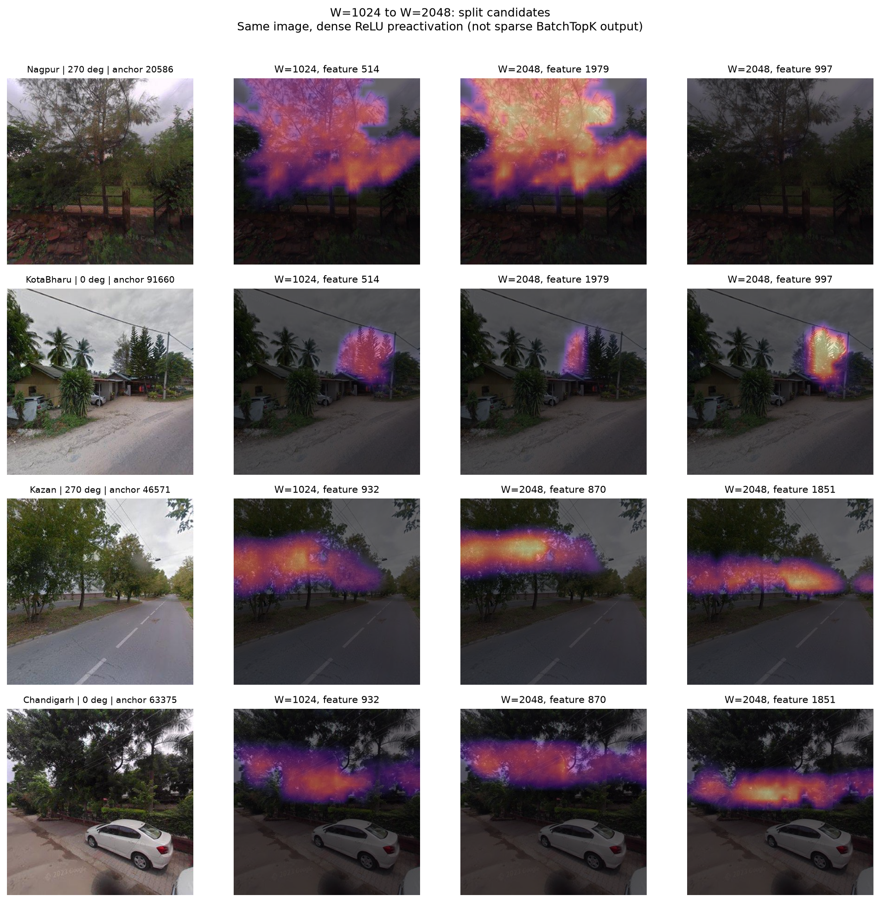
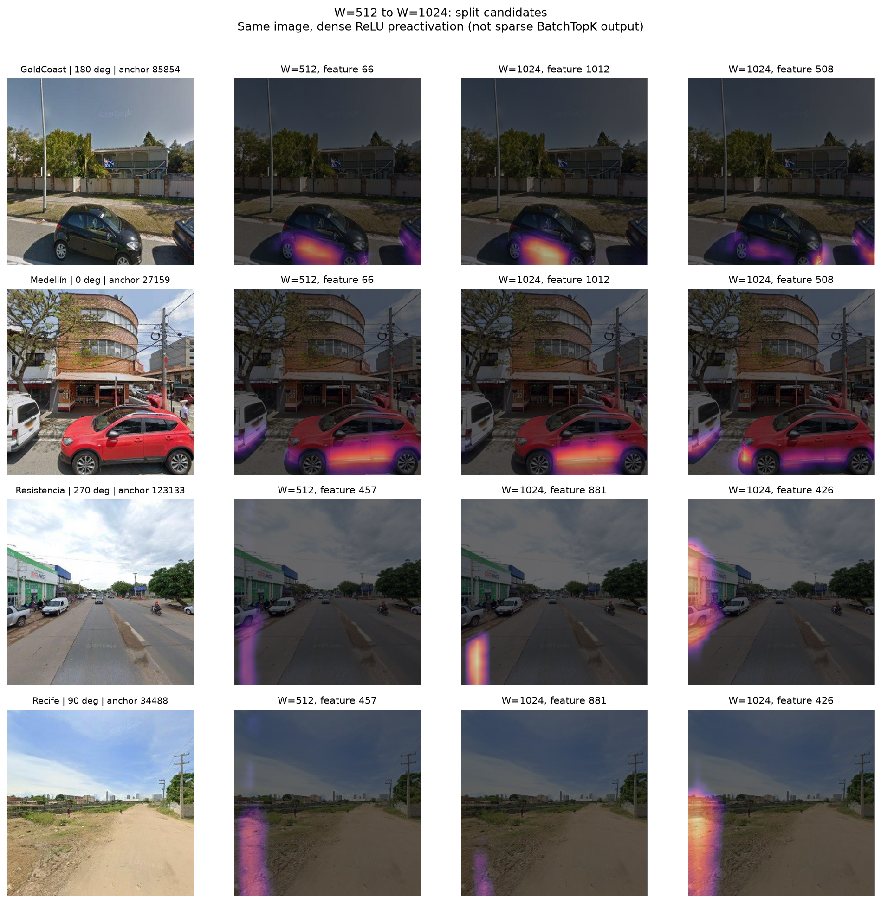
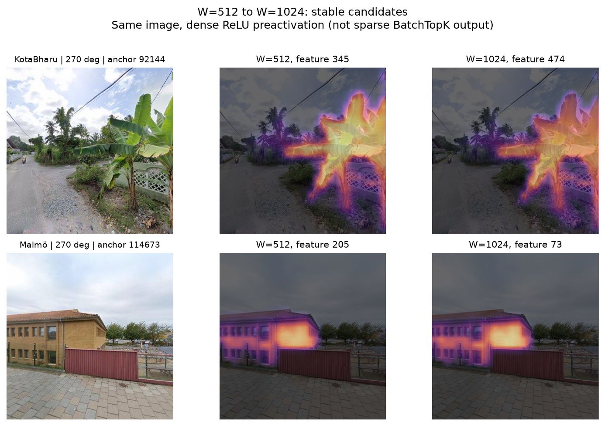
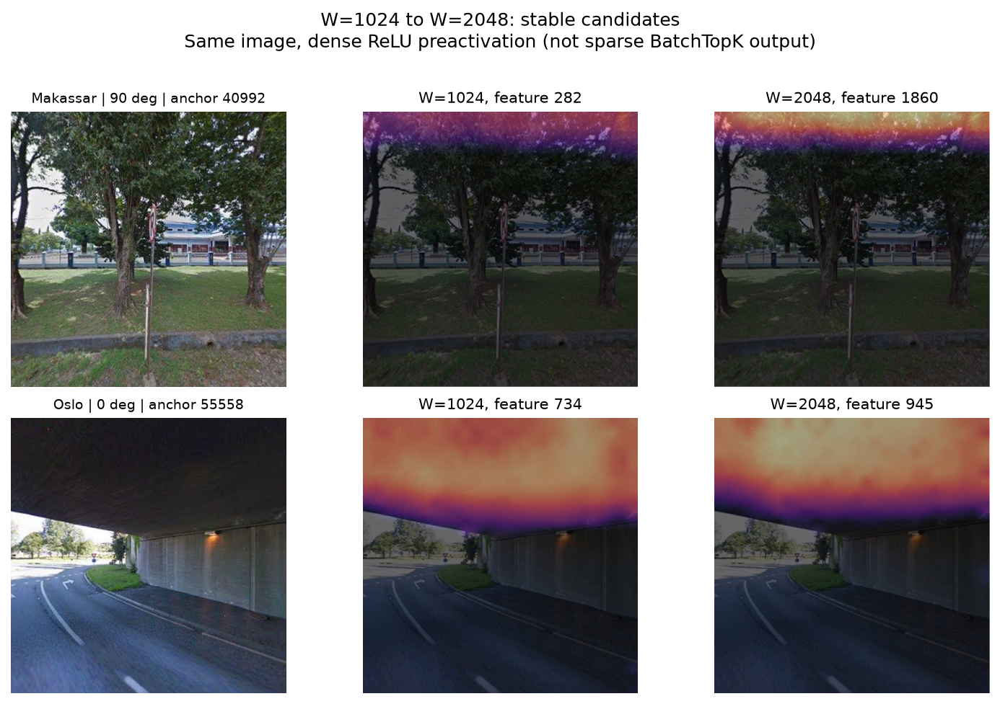
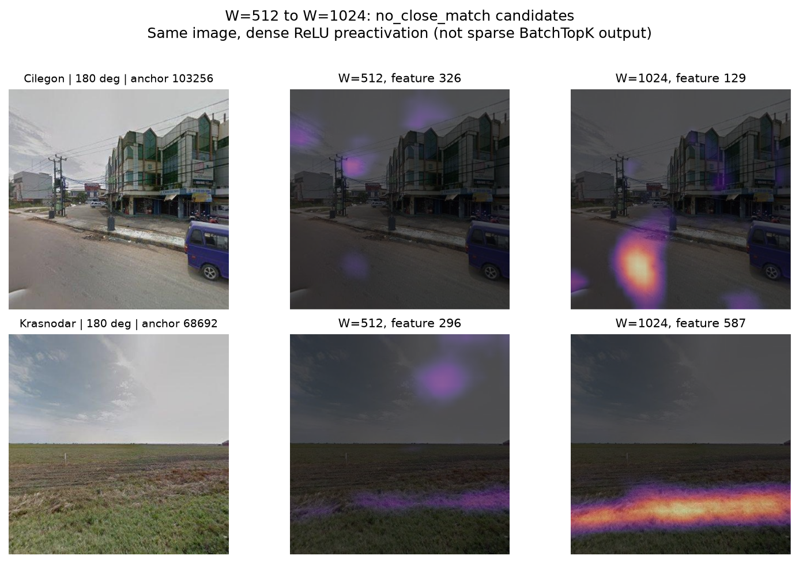
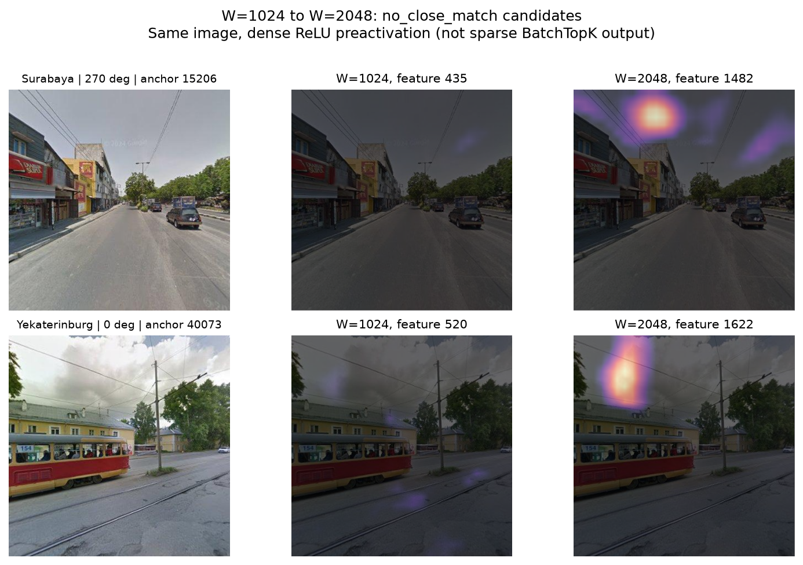
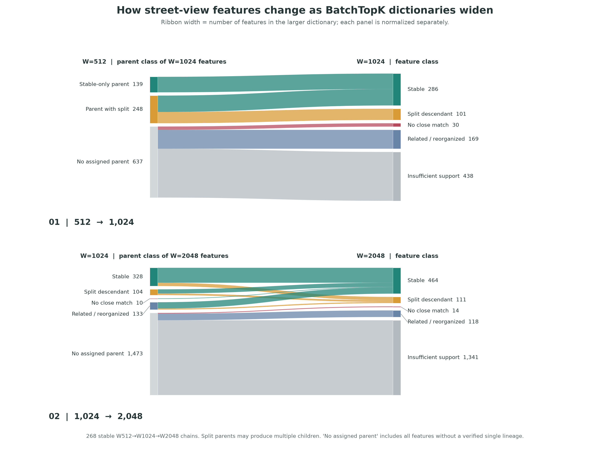

512 个特征，逐行查看流向
选择类别或输入特征编号。每行使用同一张街景对照旧特征和新特征；点击后继编号可切换分流证据，展开后可同时比较两张街景。
正在加载逐特征街景实例…
激活与类别来自稀疏 BatchTopK；图片热区是完整 28×28 网格上的稠密正预激活，同一街景中的热图共享色标。未激活行展示预激活最高的候选街景，不是有效激活实例。
先看街景实例
每幅图按“原始街景 → 旧特征响应 → 新特征响应”排列；分流例子会显示两个新特征。点击放大查看 patch 激活区域。
分流指旧特征的激活由两个有部分独占响应的新特征覆盖。图像能帮助判断这种分工是否真的对应不同景观外观，还是仅仅受位置影响。
Nagpur 与 Kota Bharu：同一旧响应分到两个后继
f514 → f1979 / f997；下方还有 Kazan 与 Chandigarh 的 f932 → f870 / f1851。

Gold Coast 与 Medellín：车辆区域的局部响应
f66 → f1012 / f508；Resistencia 与 Recife 的另一组则更接近图像左缘模式。

稳定指旧特征与新特征在 decoder、激活强度和激活位置上均达到匹配门槛。图中比较的是同一张街景上的响应区域。
Kota Bharu 的香蕉叶与 Malmö 的建筑立面
f345 → f474；f205 → f73。

Makassar 的上缘区域与 Oslo 的桥底
f282 → f1860；f734 → f945。

“无近似对应”只表示在本次阈值下找不到可靠的单个旧特征。图中仍放入最接近的旧特征作为参照；这不是“发现了全新对象类别”的证明。
Cilegon 与 Krasnodar：画面下方的响应
新特征 f129、f587，主要集中在地表或图像下部。

Surabaya 与 Yekaterinburg：天空和画面上方
新特征 f1482、f1622。

图中的热区是稠密 ReLU 预激活，用于看响应位置；下方关系统计来自稀疏 BatchTopK 输出。每张图内旧、新特征使用相同色标。
从 512 流向 1024，再到 2048
每条带按较大字典中的特征数绘制，两段分别归一化。左侧统计的是后继特征的来源类别，并非独立父特征数。

其中 268 条稳定链贯穿三种宽度。图里的 No assigned parent 表示未能指定可靠的单一旧特征，并不意味着所有这些特征都是新出现的街景语义。
这些名称具体指什么
按同一组 151,040 个 SAE 训练缓存之外的 patch 计算，城市本身仍在模型训练数据中出现过。
No assigned parent：没有确定的单一来源
512→1024 的 637 个 = 无近似对应 30 + 有关联但未能归类 169 + 支持不足 438；1024→2048 的 1,473 个 = 14 + 118 + 1,341。这是绘制流向时的归属入口，不是模型学出的一个类别，也不等于新语义数量。
稳定
两边至少各有 25 个激活 patch，互为最佳匹配；decoder 余弦相似度 ≥0.70、激活余弦相似度 ≥0.35、支持集 Jaccard ≥0.15。
分流
两个子特征各覆盖父特征至少 15% 的激活，并有各自独占的父特征支持；合计覆盖至少 50%。一个父特征可以既稳定延续又发生额外分流。
无近似对应
新特征至少有 25 个激活 patch，但与所有旧特征的最大 decoder 余弦相似度 <0.45、最大激活余弦相似度 <0.25。它也可能由多个旧特征共同表达。
数量与限制
| 字典宽度变化 | 稳定匹配 | 分流父特征候选 | 无近似对应候选 |
|---|---|---|---|
| 512 → 1024 | 286 | 164 | 30 |
| 1024 → 2048 | 464 | 201 | 14 |
每种宽度只有一个训练初始化。这些关系是可复查的候选，尚非已验证的语义类别或普适尺度规律。2048 字典在本次评估中有 1,340 个特征未激活，重构损失略高于 1024。